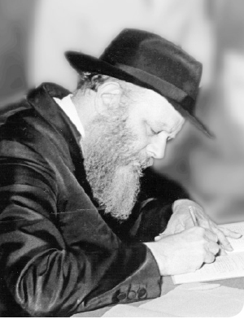
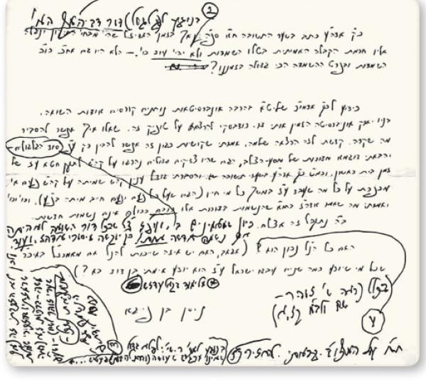

מענה נדיר משנת תשל”א, רשום בכתב יד קודש כ”ק אדמו”ר מלך המשיח שליט”א על מכתב הרב
מענה נדיר משנת תשל”א, רשום בכתב יד קודש כ”ק אדמו”ר מלך המשיח שליט”א על מכתב הרב ניסן שי’ מאנגעל, בו מתייחס הרבי להצעת הרב מאנגעל לאפשרות אמירת הסבר אודות השואה על פי סוד הגלגולים
מענה נדיר משנת תשל”א, רשום בכתב יד קודש כ”ק אדמו”ר מלך המשיח שליט”א על מכתב הרב ניסן שי’ מאנגעל, בו מתייחס הרבי להצעת הרב מאנגעל לאפשרות אמירת הסבר אודות השואה על פי סוד הגלגולים

ליד ציון דברי אדמו”ר האמצעי הואיל הרבי לרשום (וסומן במס’ 2): בנוגע ל(גלגול) דור דביהמ”ק [דבית המקדש] הא’
וזה לשונו של אדמו”ר האמצעי שם – מובא בפענוח הראשי תיבות וסימני פיסוק:
כמו שהיה בזמן בית המקדש ראשון שהיו עובדים את ה’ ולא פרקו עול מלכות-שמים רק בדבר עבודה–זרה פרקו עול מאד; והיה להם בזה לבד תאוה נפלאה, עד שלא נשאר רק שבעת אלפים שלא כרעו לבעל בימי אחאב, וכל המלכים שעבדו עבודה זרה היו אנשים גדולים, ורק בעון פלילי דעבודה זרה דבקו בו.
ולא היה לכל הדורות הללו, שהיו נשמות גבוהות, עלי’ ותקון, עד בזמן הפלסופים שבזמן רש”י והרמב”ם עד האר”י ז”ל, שזה הי’ משנת גזרת תתנ”ו שבימי רש”י עד גירוש פורטגאל בזמן רנ”ב, עד שבא זמנו של האר”י ז”ל בשל”ג, שנפטר, אמר בפירוש שבזמנו דווקא בטלו השמדות שהיה בכל משך הזמן הזה, ערך ת”ק שנה.
וכל אותן שקידשו השם, אלפים ורבבות בכל דור, כמבואר בס’ שבט יהודה, מכל פרטי השמדות שהיה בכל שנה בזמן ת”ק שנה הנ”ל בצרפת דוקא – הכל היה מנשמות שהיו בזמן בהמ”ק ראשון. ועיקר התיקון היה לפי שהיו מוסיפים יניקה לעבודה זרה, כתרין דקליפה, על כן, התיקון היה במס”נ על קדוש ה’ באמונה פשוטה, שהיא נגד סברת שכל האנושי דפלסופים אחר כל החקירה, והיו כולם פלסופים גדולים לחקור באלקות, שזהו נגד העבודה זרה, שלא יאמין רק בחקירת שכלו, ויתלוצץ מכל עבודה זרה, וימאסו בה.
ואמנם בה’ אחד, גם אחר החקירה בקדמות וכיוצא, מסרו נפשם על קידוש ה’. נמצא שהיה התיקון במקום הצריך, שאין לך תיקון מעובד עבודה זרה שנעשה פלסוף ומוסר נפשו על קידוש ה’ וד”ל, וכולם מסרו נפשם.
וכידוע דגם האבן עזרא וכיוצא בו מסרו נפשם על קידוש ה’, וכולם היו צדיקים מופלגים. אך בזמן האר”י ז”ל שהיה מבחי’ התיקון, ונגלה אליו חכמת הקבלה האמיתית, בטלו השמדות ולא יהיה עוד כו’ וד”ל.
•

בהמשך כתב הרב מאנגעל לרבי שהוא (כמי שבעצמו היה במחנה ההשמדה אושוויץ ובחסדי ה’ ניצל) נתבקש להגיע לאחת האוניברסיטאות, להרצות בנושא השואה והקושיות על זה. בהרצאה שנשא, אמר שקושיות כגון אלו אפשר להבין רק על פי “סוד הגלגולים”, ובסיום תיאורו כתב, “ב”ה נתקבל זה אצלם”.
הרבי הואיל לענות (סומן במס’ 3) בטעם זה שהענין נתקבל אצלם: כיון שמאמינים בסוד הגלגולים (המילים “סוד הגלגולים” סומנו בדברי הכותב), ועפ”ז צ”ל [ועל פי זה צריך לומר] שבכל דור השואה לא היתה אף נשמה חדשה אחת! כן יוקשה מיסורי אדה”ז [אדמו”ר הזקן]. ועוד. ולכן לא הזכרתי זה (אף שרמזתיו בהזכירי שאלת משה – ברכות ז, א (ראה שערי זוהר לשם) – ושע”פ [ושעל פי] שכל – נמצאת הנשמה גם קודם לידת פ’.
[במה שהרבי כותב כאן “שרמזתיו בהזכירי שאלת משה”, כנראה כוונתו לשיחת ש”פ בראשית תשל”א (שיחו”ק תשל”א ח”א ע’ 158), שם ציטט את שאלת משה “מפני מה וכו’ צדיק ורע לו?”, ושאל על כך הרבי: כאשר לוקחים בחשבון שהחיים כאן בעולם הזה הם רק חלק קטן מהמשך החיים בעולם הבא – אין מקום לכאורה לשאלה כזו?!]
על שאלת הרב מאנגעל בקשר להסבר שאמר בהרצאתו, “האם כל הנ”ל נכון הוא?” – מחק הרבי את סימן-השאלה וכתב (סומן במס’ 4): בכלל (ראה ש’ זוהר – שם ולב”מ קז, א).
למענה נוסף בנושא זה, ראה גם בספר “אוצר המלך” חלק א עמ’ 88.